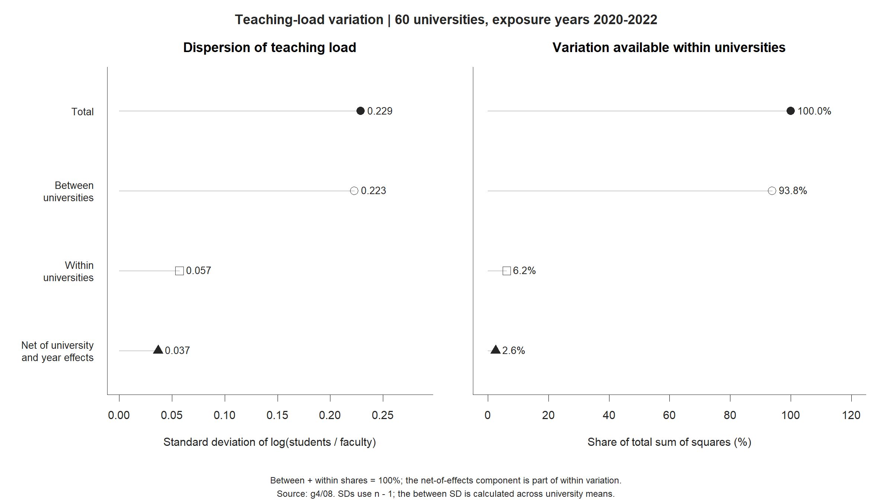
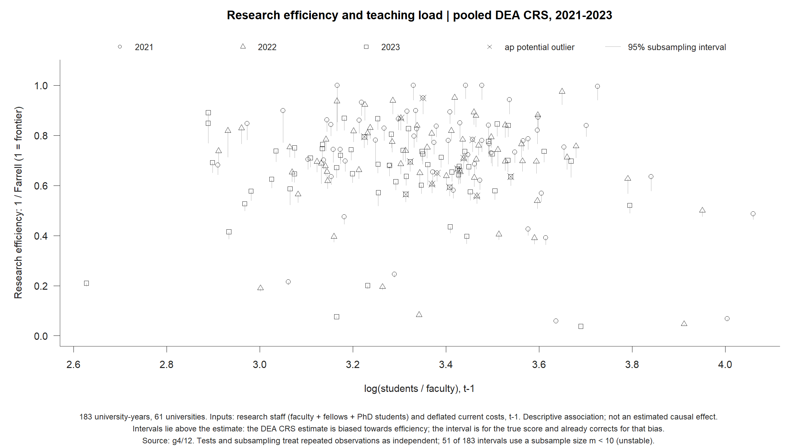
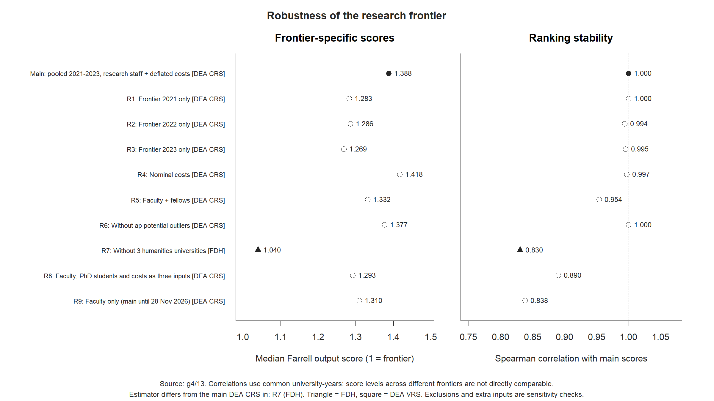
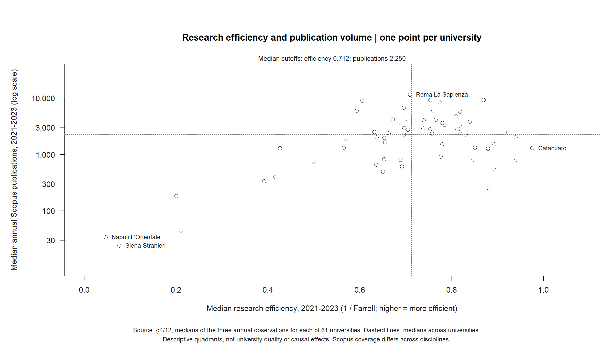
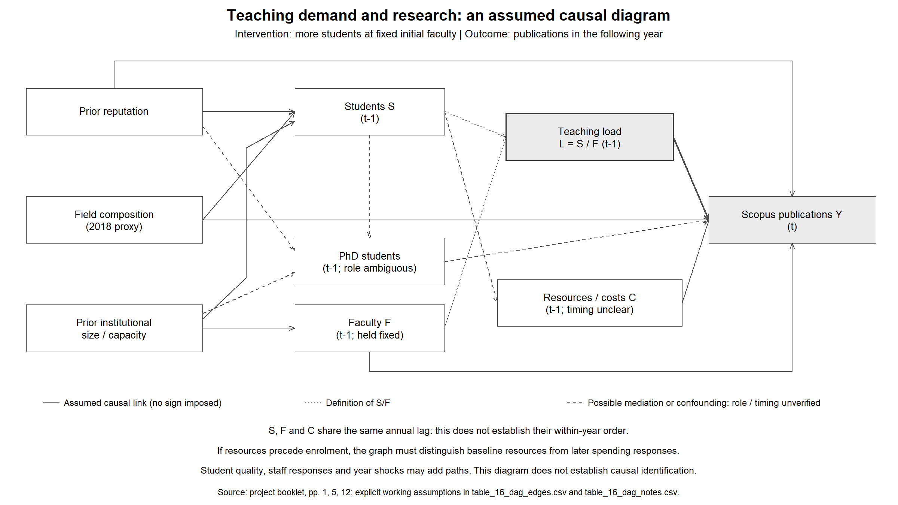

Presentation assets generated by g4/15 from existing results. No new estimation. Figures are available as 16:9 PNG and vector PDF.
Source: g4/07. Row losses are sequential; Siena Stranieri lacks 2018 field shares.
| step | rows | rows_dropped | universities | years | universities_dropped |
|---|---|---|---|---|---|
| 1. Teaching panel 2020-2023 | 244 | 0 | 61 | 2020-2023 | |
| 2. Lagged teaching load observed (no 2019 data) | 183 | 61 | 61 | 2021-2023 | |
| 3. Outcome and lagged controls observed | 183 | 0 | 61 | 2021-2023 | |
| 4. 2018 field shares observed (estimation sample of 06) | 180 | 3 | 60 | 2021-2023 | Siena Stranieri |
Source: g4/07. 180 university-years, 60 universities. Costs in this table are nominal; the main frontier uses deflated costs.
| variable | years | n | mean | sd | min | p25 | median | p75 | max |
|---|---|---|---|---|---|---|---|---|---|
| Scopus publications (t) | 2021-2023 | 180 | 2845.31 | 2569.35 | 31.00 | 902.00 | 2256.50 | 3706.25 | 11551.00 |
| Enrolled students (t-1) | 2020-2022 | 180 | 26307.00 | 22104.49 | 955.00 | 11434.25 | 21189.00 | 33257.75 | 109839.00 |
| Faculty, internal teaching staff (t-1) | 2020-2022 | 180 | 900.08 | 736.17 | 55.00 | 343.00 | 712.50 | 1101.50 | 3576.00 |
| Students per faculty member (t-1) | 2020-2022 | 180 | 29.20 | 6.92 | 13.84 | 24.09 | 28.51 | 32.84 | 57.99 |
| Research fellows (t-1) | 2020-2022 | 180 | 242.29 | 268.02 | 5.00 | 72.00 | 144.50 | 285.75 | 1295.00 |
| PhD students (t-1) | 2020-2022 | 180 | 560.21 | 581.64 | 29.00 | 193.25 | 355.00 | 697.00 | 3612.00 |
| Current-management costs, million EUR nominal (t-1) | 2020-2022 | 180 | 67.09 | 62.01 | 2.62 | 18.06 | 52.00 | 84.95 | 286.61 |
Source: g4/12. The frontier sample includes Siena Stranieri because field shares are not required.
| sample | rows | universities | note |
|---|---|---|---|
| Frontier (this script) | 183 | 61 | includes Siena Stranieri (no 2018 field shares needed) |
| OLS/SFA of 06 | 180 | 60 | requires 2018 field shares |
Source: g4/10. Outcome: log publications. SEs in parentheses: university-clustered HC1; 95% intervals use t with 59 degrees of freedom. All columns control for lagged log faculty and year effects. Column (7) uses regular students. Column (8) adds lagged log PhD students to (6) as a robustness check: PhD students may be a confounder or a mediator, so they are not in the main specification. Targets label the intended estimands under identifying assumptions; these observational estimates do not establish causality.
| row | (1) | (2) | (3) | (4) | (5) | (6) | (7) | (8) |
|---|---|---|---|---|---|---|---|---|
| log(teaching load), t-1 | -0.366 | -0.493 | 0.167 | 0.142 | 0.005 | 0.011 | 0.118 | -0.077 |
| (0.479) | (0.468) | (0.090) | (0.087) | (0.345) | (0.350) | (0.270) | (0.333) | |
| log faculty, t-1 | 1.274 | 0.628 | 1.057 | 0.780 | 0.367 | 0.380 | 0.526 | 0.297 |
| (0.109) | (0.245) | (0.026) | (0.136) | (0.368) | (0.368) | (0.374) | (0.372) | |
| log current costs, t-1 | 0.568 | 0.255 | -0.054 | -0.054 | -0.139 | |||
| (0.215) | (0.122) | (0.126) | (0.124) | (0.164) | ||||
| log PhD students, t-1 | 0.141 | |||||||
| (0.100) | ||||||||
| 95% CI, teaching load | [-1.33, 0.59] | [-1.43, 0.44] | [-0.01, 0.35] | [-0.03, 0.31] | [-0.69, 0.70] | [-0.69, 0.71] | [-0.42, 0.66] | [-0.74, 0.59] |
| Load measure | enrolled students / faculty | enrolled students / faculty | enrolled students / faculty | enrolled students / faculty | enrolled students / faculty | enrolled students / faculty | regular students / faculty | enrolled students / faculty |
| Year effects | yes | yes | yes | yes | yes | yes | yes | yes |
| 2018 field shares | no | no | yes | yes | absorbed | absorbed | absorbed | absorbed |
| University effects | no | no | no | no | yes | yes | yes | yes |
| Target | total | fixed resources | total | fixed resources | total | fixed resources | fixed resources | fixed resources + PhD (robustness) |
| N | 180 | 180 | 180 | 180 | 180 | 180 | 180 | 180 |
| Universities | 60 | 60 | 60 | 60 | 60 | 60 | 60 | 60 |
| R-squared | 0.858 | 0.880 | 0.968 | 0.971 | 0.998 | 0.998 | 0.998 | 0.998 |
| Within R-squared | 0.077 | 0.080 | 0.087 | 0.110 |
Source: g4/13. Farrell scores >= 1; 1 is the frontier. Fast tests report decisions at 5%, not p-values. Main inputs: research staff (faculty + fellows + PhD students) and deflated current costs, t-1. Correlations use common observations; score levels from different frontiers are not directly comparable. R7 excludes Napoli L'Orientale, Siena Stranieri and Perugia Stranieri. R8 uses faculty, PhD students and costs as three inputs (more efficient units mechanically). R9 is the faculty-only frontier, the main version until 28 November 2026. Non-rejection does not prove the null.
| version | rows | universities | convexity_5pct | crs_5pct | estimator | median_farrell | n_efficient | share_efficient | spearman_with_main |
|---|---|---|---|---|---|---|---|---|---|
| Main (g4/12): pooled 2021-2023, research staff + deflated costs | 183 | 61 | not rejected | not rejected | DEA CRS | 1.388 | 4 | 0.022 | 1.000 |
| R1. Frontier 2021 only | 61 | 61 | not rejected | not rejected | DEA CRS | 1.283 | 4 | 0.066 | 1.000 |
| R2. Frontier 2022 only | 61 | 61 | not rejected | not rejected | DEA CRS | 1.286 | 5 | 0.082 | 0.994 |
| R3. Frontier 2023 only | 61 | 61 | not rejected | not rejected | DEA CRS | 1.269 | 3 | 0.049 | 0.995 |
| R4. Nominal costs | 183 | 61 | not rejected | not rejected | DEA CRS | 1.418 | 4 | 0.022 | 0.997 |
| R5. Faculty + fellows | 183 | 61 | not rejected | not rejected | DEA CRS | 1.332 | 4 | 0.022 | 0.954 |
| R6. Without ap potential outliers | 170 | 58 | not rejected | not rejected | DEA CRS | 1.377 | 4 | 0.024 | 1.000 |
| R7. Without 3 humanities universities | 174 | 58 | rejected | rejected | FDH | 1.040 | 65 | 0.374 | 0.830 |
| R8. Faculty, PhD students and costs as three inputs | 183 | 61 | not rejected | not rejected | DEA CRS | 1.293 | 6 | 0.033 | 0.890 |
| R9. Faculty only (main until 28 Nov 2026) | 183 | 61 | not rejected | not rejected | DEA CRS | 1.310 | 3 | 0.016 | 0.838 |
Source: g4/12. Each row aggregates three years by medians. Cutoffs are medians across universities; ties belong to the at-or-above group.
| university | median_efficiency | median_publications | efficiency_group | publication_group | efficiency_cutoff | publication_cutoff |
|---|---|---|---|---|---|---|
| Bari | 0.7392914 | 4068 | At or above median | At or above median | 0.712322 | 2250 |
| Bari Politecnico | 0.8505441 | 1327 | At or above median | Below median | 0.712322 | 2250 |
| Basilicata | 0.8474622 | 813 | At or above median | Below median | 0.712322 | 2250 |
| Bergamo | 0.5001180 | 741 | Below median | Below median | 0.712322 | 2250 |
| Bologna | 0.6054684 | 8957 | Below median | At or above median | 0.712322 | 2250 |
| Brescia | 0.9226730 | 2445 | At or above median | At or above median | 0.712322 | 2250 |
| Cagliari | 0.6625460 | 2373 | Below median | At or above median | 0.712322 | 2250 |
| Calabria | 0.6366538 | 2012 | Below median | Below median | 0.712322 | 2250 |
| Camerino | 0.6530691 | 820 | Below median | Below median | 0.712322 | 2250 |
| Cassino | 0.6504624 | 495 | Below median | Below median | 0.712322 | 2250 |
| Catania | 0.7798860 | 3596 | At or above median | At or above median | 0.712322 | 2250 |
| Catanzaro | 0.9753787 | 1294 | At or above median | Below median | 0.712322 | 2250 |
| Chieti e Pescara | 0.6536085 | 1972 | Below median | Below median | 0.712322 | 2250 |
| Ferrara | 0.7571839 | 2361 | At or above median | At or above median | 0.712322 | 2250 |
| Firenze | 0.7599657 | 6015 | At or above median | At or above median | 0.712322 | 2250 |
| Foggia | 0.8790676 | 1267 | At or above median | Below median | 0.712322 | 2250 |
| Genova | 0.8091289 | 4778 | At or above median | At or above median | 0.712322 | 2250 |
| Insubria | 0.8930225 | 1518 | At or above median | Below median | 0.712322 | 2250 |
| L'Aquila | 0.9389765 | 2022 | At or above median | Below median | 0.712322 | 2250 |
| Macerata | 0.3915555 | 333 | Below median | Below median | 0.712322 | 2250 |
| Marche Politecnica | 0.8306521 | 2263 | At or above median | At or above median | 0.712322 | 2250 |
| Messina | 0.7531277 | 2805 | At or above median | At or above median | 0.712322 | 2250 |
| Milano | 0.8692311 | 9218 | At or above median | At or above median | 0.712322 | 2250 |
| Milano Bicocca | 0.7652008 | 4151 | At or above median | At or above median | 0.712322 | 2250 |
| Milano Politecnico | 0.5933585 | 5945 | Below median | At or above median | 0.712322 | 2250 |
| Modena e Reggio Emilia | 0.6970769 | 2936 | Below median | At or above median | 0.712322 | 2250 |
| Molise | 0.9367734 | 751 | At or above median | Below median | 0.712322 | 2250 |
| Napoli Federico II | 0.7742951 | 8525 | At or above median | At or above median | 0.712322 | 2250 |
| Napoli L'Orientale | 0.0467812 | 34 | Below median | Below median | 0.712322 | 2250 |
| Napoli Parthenope | 0.7761452 | 910 | At or above median | Below median | 0.712322 | 2250 |
| Napoli Vanvitelli | 0.7840787 | 3356 | At or above median | At or above median | 0.712322 | 2250 |
| Padova | 0.7528121 | 9247 | At or above median | At or above median | 0.712322 | 2250 |
| Palermo | 0.6863792 | 3674 | Below median | At or above median | 0.712322 | 2250 |
| Parma | 0.6318385 | 2500 | Below median | At or above median | 0.712322 | 2250 |
| Pavia | 0.8391873 | 3793 | At or above median | At or above median | 0.712322 | 2250 |
| Perugia | 0.8083220 | 2985 | At or above median | At or above median | 0.712322 | 2250 |
| Perugia Stranieri | 0.2102567 | 44 | Below median | Below median | 0.712322 | 2250 |
| Piemonte Orientale | 0.7123223 | 1397 | At or above median | Below median | 0.712322 | 2250 |
| Pisa | 0.8184928 | 5704 | At or above median | At or above median | 0.712322 | 2250 |
| Reggio Calabria | 0.6918759 | 615 | Below median | Below median | 0.712322 | 2250 |
| Roma Foro Italico | 0.8814935 | 239 | At or above median | Below median | 0.712322 | 2250 |
| Roma La Sapienza | 0.7091346 | 11537 | Below median | At or above median | 0.712322 | 2250 |
| Roma Tor Vergata | 0.6720093 | 4202 | Below median | At or above median | 0.712322 | 2250 |
| Roma Tre | 0.5695525 | 1886 | Below median | Below median | 0.712322 | 2250 |
| Salento | 0.7794440 | 1518 | At or above median | Below median | 0.712322 | 2250 |
| Salerno | 0.8207808 | 3042 | At or above median | At or above median | 0.712322 | 2250 |
| Sannio | 0.8912739 | 563 | At or above median | Below median | 0.712322 | 2250 |
| Sassari | 0.5649050 | 1313 | Below median | Below median | 0.712322 | 2250 |
| Siena | 0.6955390 | 2250 | Below median | At or above median | 0.712322 | 2250 |
| Siena Stranieri | 0.0764836 | 24 | Below median | Below median | 0.712322 | 2250 |
| Teramo | 0.4154961 | 397 | Below median | Below median | 0.712322 | 2250 |
| Torino | 0.6959652 | 6739 | Below median | At or above median | 0.712322 | 2250 |
| Torino Politecnico | 0.6972971 | 4015 | Below median | At or above median | 0.712322 | 2250 |
| Trento | 0.7382804 | 2911 | At or above median | At or above median | 0.712322 | 2250 |
| Trieste | 0.8172011 | 2472 | At or above median | At or above median | 0.712322 | 2250 |
| Tuscia | 0.6883646 | 807 | Below median | Below median | 0.712322 | 2250 |
| Udine | 0.6550303 | 1635 | Below median | Below median | 0.712322 | 2250 |
| Urbino | 0.6354414 | 660 | Below median | Below median | 0.712322 | 2250 |
| Venezia Cà Foscari | 0.4258440 | 1286 | Below median | Below median | 0.712322 | 2250 |
| Venezia Iuav | 0.2004161 | 182 | Below median | Below median | 0.712322 | 2250 |
| Verona | 0.7046529 | 2743 | Below median | At or above median | 0.712322 | 2250 |




Working assumptions, not estimated effects. Generated by g4/16 after this index.
